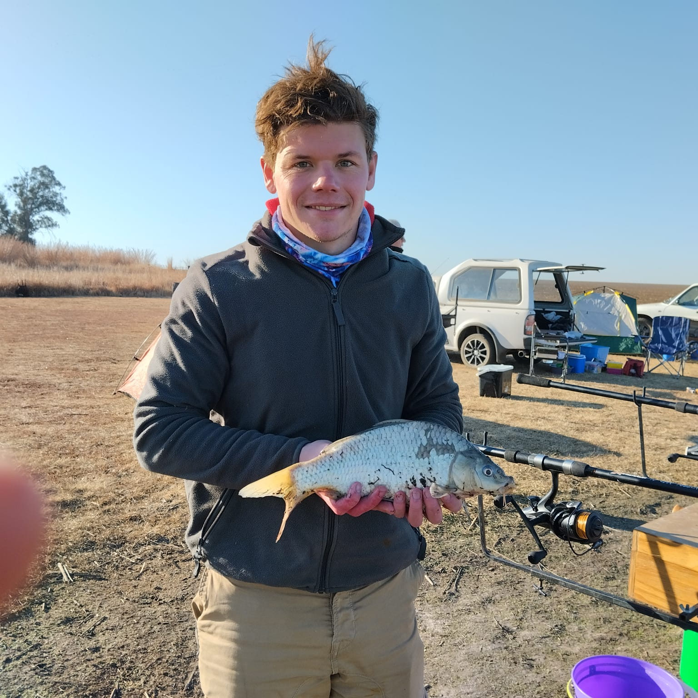

Curriculum Vitae For Ivan van Eyk
Summary
Education
- First language Afrikaans HG
- Second language English HG
- Biology/ Life science
- History
- Geography
- Mathematics literature
Work experience
Salesman -> Mica Hardware & Industtrial Supplies
- General sales of hardware and Industrial Supplies
- 0824150079 (Private)
Delivery driver -> Labelton
- Deliveries and collections
- 073 461 1775 (Private)
- 010 448 3000 (Work)
Electronics Technician -> Repro Supplies
- Soldering and reworking PCBs
- Managing a production line
- Iinspection and quality control
- IPC-A-610 Acceptability of Electronic Assemblies
- 071 828 2250 (Private)
- 011 826 5364 (Work)
VoiP engineer -> Affinity Health
- Setup Asterisk Servers
- Create agents
- Create and maintain dialplans
- Troubleshoot issues
- 0785013435 (Private)
I am driven and motivated, with a good team spirit and passion for learning. “Carpe Diem” is the motto I live by; ‘ Seize the day.’
I have worked in a variate of different fields as I find most field interesting and wanting to learn and currenty I am in the IT field. I am a VoiP engineer and work with Asterisk and Vicidial to get our agents calling. In the slow times I am studying Web development and Perl to further inhance my skills.
I really enjoy a challenge that will get my brain working and streching and I love to work both in a team and induvidually, depending on the task.
I matriculated with a Bachelor's Degree exemption in 2017 from Hoërskool Oosterlig.
Subjects:
5th February – 12 August 2018
Contact Person: Mark Askew
2nd March 2020 - 27 August
Contact Person: Jacques van Tonder
1st February 2021 - 3rd September 2023
Qualification:
Contact Person: Carel (Manager)
4rd September 2023 - Present